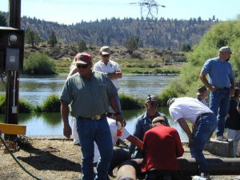
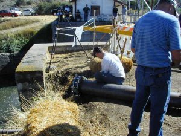
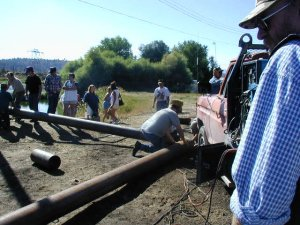
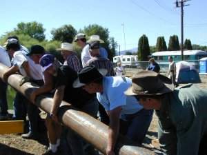
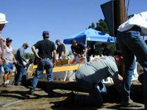
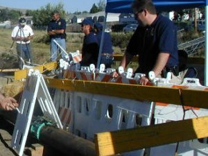
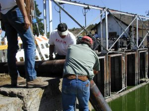
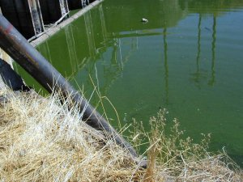
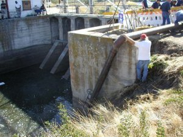
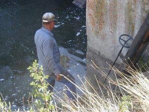

|
Report Number Ten - Siphon Bypass Installed, Barbara Martin Served Restrinaing Order By: Jeff Head, September 3, 2001 [with many photos and caption narrative by Christie of FreeRepublic] I called the headgates Sunday afternoon, September 2, 2001, to talk to Barbara Martin about her coming court appearance in Eugene. It seems that the Federal Government is serving her with a restraining order to keep away from the headgates because she is "inciting". Barbara has been very involved with this protests at the headgate from the beginning. She is the woman who so effectively communicated with the Federal Officers (U.S. Marshals) that first day after the Feds took the gates back. She has continued ever since, being one of the principle individuals doing the research regarding the original project provisions for the farmers to won the headgates and other project results once the construction costs were paid off. The Feds took issue with her presenting this material on August 30 to the farmers when they decided to go across the fence and enter the fenced in area.

While talking, a truck drove into the fenced in area. A welding truck. Barbara had me to talk to Baron, the first person across the fence on the 30th and a farmer who is being severally impacted by the lack of irrigation water. Baron let me know that they were going to be putting in the first siphon pipe right across the area just outside the headgates. I encouraged him to put in several and to not stop until they filled up that ditch. He indicated they were headed that way, and hoped to have several pipes siphoning water soon. Christie, from the FreeRepublic.com web site was there and recorded these photos:
  Farmers fabricating siphon line from 10" steel pipe.
  More pipe fabrication and moving the pipe into place.
  Routing the 10" siphon line right past the Federal Officers at the headgates.
  Finishing the intake and the intake extending into the lake on the lake side of the headgates..
  Finishing the outlet and watching the outlet siphon. Here's a description by an individual who has been involved at the headgates from the beginning, Gaylord Brown, on how the siphon was actuated: After the pipe was put together and placed into position, with the discharge end just above the water and the suction end of the pipe placed in 5 feet of water, on the lake side a hole was cut in the 10 inch pipe about 7 feet from the suction end. A fitting, that would except a garden hose, was welded into this hole.This was all occuring between 4 PM and 6 PM on Sunday, September 2nd, 2001. By 6 PM that water was flowing! Place more pipe. Let more water flow. Fill that ditch! Relegate the headgate guards to nothing. God bless these fine people as they continue to battle for their rights and liberty. ... and let us not forget Barbara Martin, as couragous and brave a soul as there is in this same fight. Support her, all who can, in Eugene at the courthous of Tuesday, September 4th, 2001 at 1 PM!
Jeff Head
SIGN THE NATIONAL PETITION FOR THE KLAMATH BASIN CRISIS
CLICK BELOW FOR BOOKS/NOVELS OF INTEREST: 


[Please consider visiting these sites as well] The Attack on America Memorial Site - The Winning Iraqi Freedom Dedicatory Site
Copyright © 2001-2006 by Jeff Head, All Rights Reserved
|